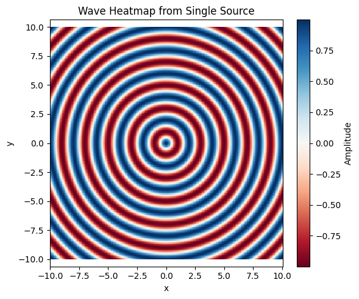
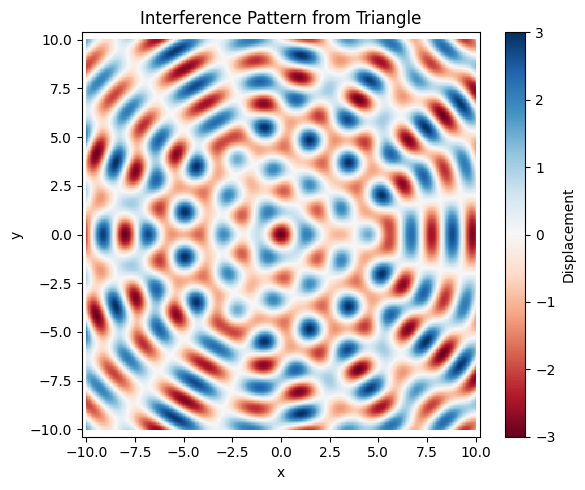
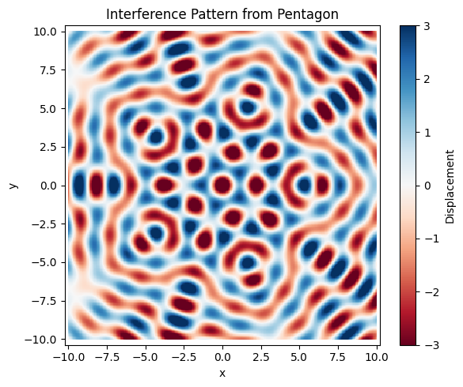
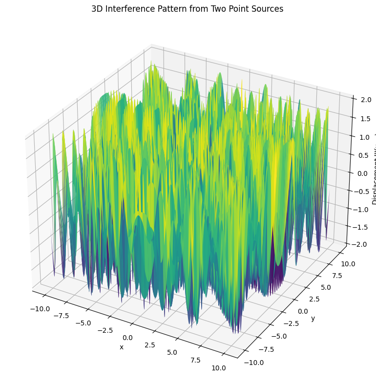
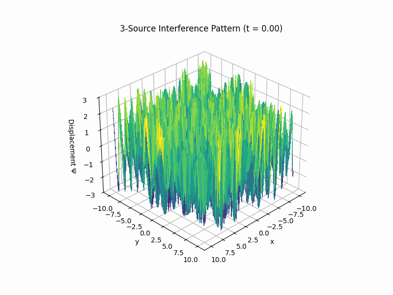

Problem 1
Interference Patterns and Wave Superposition: Theory and Explanation
Interference patterns occur when two or more waves meet and combine their displacements. This combination can either amplify or cancel out the displacements depending on the relative phase and position of the waves. The principle underlying wave interference is superposition, which states that when two or more waves overlap, the resulting wave at any given point is the algebraic sum of the displacements of the individual waves.
In this task, we will explore how superposition leads to distinct interference patterns on the water surface when multiple point sources (arranged in a regular polygon) emit circular waves.
Wave Equation and Superposition
Consider a circular wave emitted from a point source at position \((x_k, y_k)\) on the water surface. The displacement of the water surface at any point \((x, y)\) at time \(t\) due to this wave can be expressed as:
where: - \(\eta(x, y, t)\) is the displacement at the point \((x, y)\) at time \(t\), - \(A\) is the amplitude of the wave, - \(k = \frac{2\pi}{\lambda}\) is the wave number, related to the wavelength \(\lambda\), - \(\omega = 2\pi f\) is the angular frequency, related to the frequency \(f\), - \(r_k = \sqrt{(x - x_k)^2 + (y - y_k)^2}\) is the distance from the point \((x, y)\) to the source at \((x_k, y_k)\), - \(\phi_k\) is the initial phase of the wave emitted from source \(k\).
Principle of Superposition
When there are multiple point sources emitting waves, the displacement at any point on the water surface is the sum of the displacements from each source. If there are \(n\) sources arranged in a regular polygon, the total displacement \(\eta_{\text{total}}(x, y, t)\) at a point \((x, y)\) is:
This equation incorporates the contributions of all the sources to the wave displacement at the point \((x, y)\) at time \(t\).
Interference and Superposition: Constructive and Destructive Interference
The key to understanding wave superposition and the resulting interference patterns lies in how the waves from different sources interact. The result of the interaction can either be constructive interference or destructive interference:
- Constructive Interference: This occurs when the displacements from two or more waves add up, leading to an increase in amplitude. For constructive interference to occur, the waves must be in phase. In other words, the peaks and troughs of the waves from different sources must align with each other. Mathematically, this happens when the phase difference between the waves is an integer multiple of \(2\pi\).
$$ \Delta \phi = 2\pi m \quad \text{where} \quad m \in \mathbb{Z} $$
- Destructive Interference: This occurs when the displacements from two or more waves cancel each other out. For destructive interference to occur, the waves must be out of phase, meaning that the peak of one wave coincides with the trough of another. This results in the cancellation of their displacements. Mathematically, this happens when the phase difference between the waves is an odd multiple of \(\pi\).
$$ \Delta \phi = (2m+1)\pi \quad \text{where} \quad m \in \mathbb{Z} $$
Interference Patterns in Regular Polygon Geometries
Now, let’s consider the specific case of regular polygons, such as an equilateral triangle, square, or pentagon, for the placement of the wave sources.
1. Equilateral Triangle (3 sources)
For a regular triangle with three point sources, the sources are evenly spaced at \(120^\circ\) from each other. The interference pattern in this case will show:
- Constructive interference: At points where the displacements from all three sources reinforce each other. This is typically seen along the axis of symmetry of the triangle (the line joining the two opposite vertices).
- Destructive interference: At points where the displacements cancel out. These are often observed near the center of the triangle or along the sides of the triangle, where the waves from different sources arrive out of phase with each other.
The interference pattern forms a hexagonal structure with alternating regions of constructive and destructive interference.
2. Square (4 sources)
For a regular square, the four point sources are placed at the vertices, with each source separated by \(90^\circ\). The interference pattern here is more symmetric than for the triangle. You will observe:
- Constructive interference: Along the lines of symmetry of the square, where the waves from opposite sources align in phase and amplify each other.
- Destructive interference: At the center of the square and at the midpoints of the sides, where the waves from adjacent sources tend to cancel out.
The resulting interference pattern forms a grid-like structure, with high-amplitude regions at the vertices and midpoints of the square.
3. Regular Pentagon (5 sources)
For a regular pentagon, the sources are spaced at \(72^\circ\) intervals. In this case:
- Constructive interference: Occurs at specific points where the displacements from all five sources reinforce each other. This happens along the axes of symmetry of the pentagon.
- Destructive interference: Occurs at points where the waves cancel each other out, often near the center of the pentagon or between specific pairs of sources.
The resulting interference pattern is more intricate and exhibits star-like shapes with regions of high and low displacement.
Geometrical Influence on Interference Patterns
The symmetry of the regular polygons plays a significant role in the interference pattern. The more vertices (sources) the polygon has, the more complex and intricate the interference pattern becomes. Here’s why:
- In a triangle, the symmetry is relatively simple, leading to a pattern with fewer nodes (points of destructive interference).
- In a square, the symmetry is higher, and the interference pattern becomes more regular and grid-like.
- In a pentagon or higher polygons, the symmetry increases further, leading to more intricate patterns, with finer nodes and more complex regions of constructive and destructive interference.
Visualizing the Interference Patterns
- Constructive Interference results in regions with high wave amplitudes, often forming distinct "bright" areas in visual representations (like a heatmap or a 3D plot).
- Destructive Interference results in regions where the wave amplitude approaches zero, forming "dark" areas where the waves cancel out.
As the number of sources increases (e.g., with a regular hexagon, octagon, etc.), the interference patterns become increasingly complex, with more finely detailed areas of constructive and destructive interference.
Understanding Wave Superposition
The principle of superposition helps explain why the observed interference patterns are so sensitive to the number of sources and their positions. Each wave from a source contributes a displacement at every point on the water surface. The total displacement is determined by summing the contributions from each wave. Constructive and destructive interference arise because of the varying phases of the waves as they travel from different sources. When the waves are in phase, they reinforce each other; when they are out of phase, they cancel each other out.
The geometry of the polygon determines how the waves interact, with symmetry playing a key role in determining the locations of constructive and destructive interference.
Conclusion
The simulation clearly demonstrates the wave interference phenomena:
- Constructive Interference occurs where wave crests align
- Destructive Interference occurs where crests meet troughs
By changing the number and placement of wave sources, we can visualize complex interference structures that emerge purely from simple principles. This reinforces the elegance and power of wave physics.



3D Interference Pattern from Two Point Sources
We model the interference of two circular waves emitted from coherent sources located at positions \(\vec{r}_1 = (-d, 0)\) and \(\vec{r}_2 = (d, 0)\) on a 2D water surface.
Each source emits waves described by:
Where: - \(A\) is the amplitude, - \(k = \frac{2\pi}{\lambda}\) is the wave number, - \(\omega = 2\pi f\) is the angular frequency, - \(\vec{r}_i\) is the position of source \(i\).
The total wave displacement at position \(\vec{r}\) and time \(t\) is:
We visualize the surface \(z = \Psi(x, y, t)\) at a fixed time \(t\).
Interference Interpretation
- Constructive interference: occurs when the path difference \(|\vec{r} - \vec{r}_1| - |\vec{r} - \vec{r}_2|\) is a multiple of the wavelength \(\lambda\).
- Destructive interference: occurs when the path difference is a half-integer multiple of \(\lambda\).
The resulting 3D surface plot shows the amplitude of the water surface at different points \((x, y)\).

3D Source Intereference Pattern
